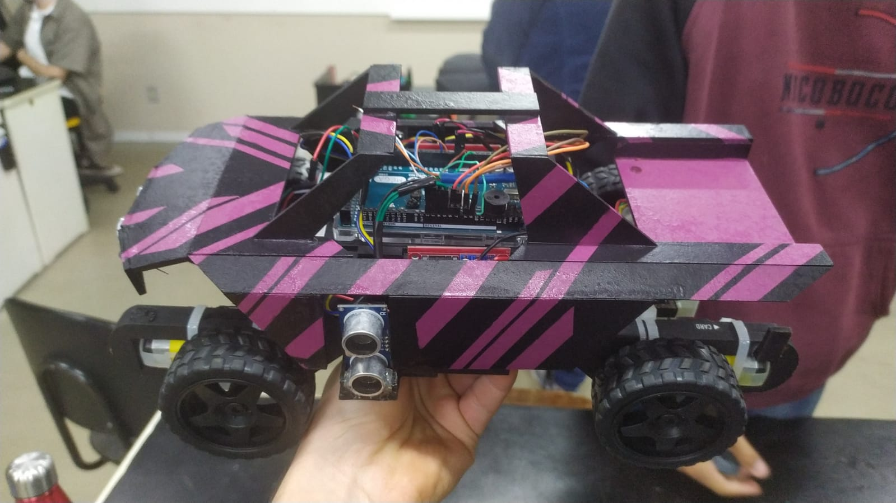
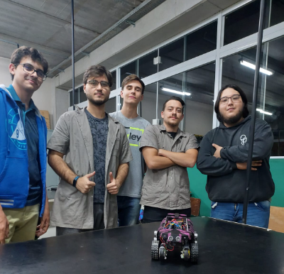
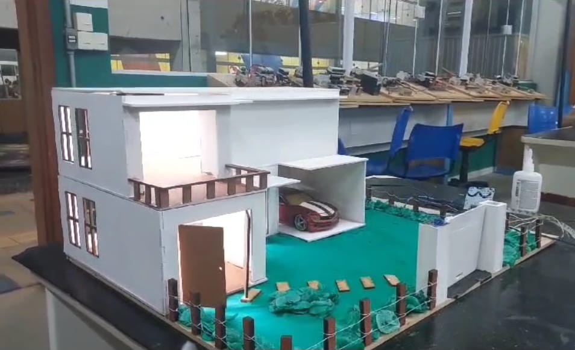

Trabalhos da faculdade
CARRINHO A CONTROLE REMOTO
A foto acima é o projeto que nós, o grupo da faculdade, criamos no primeiro semestre.
Fizemos um carrinho com Arduino, 4 motores e 2 pontes H. Colocamos também 3 sensores, um na frente e dois de cada lado.
Ao controle remoto nós utilizamos a conexão de controle-carrinho via cabo de internet, já os sensores seria para uma coisa a mais: Modo Automatizado.
O grupo do projeto é formado por mim, Vitor Hideki Sugawara, Pedro Henrique Fernandes, Enzo Barbieri, Guilherme Nicchio e Guilherme Henrique Souza
Segue abaixo a foto do grupo:
Como dito já, por pontuação na apresentação da feira na faculdade, nosso trabalho foi considerado o melhor da turma no primeiro semestre.
CASA AUTOMÁTICA
Esse foi o projeto do segundo semestre que, no caso, foi a escolha de fazer uma casa automática.
Fizemos uma maquete de uma casa de dois andares(sem decoração interna). Colocamos um Arduino no segundo andar e conectamos á leds do tipo fita tanto no primeiro, tanto no segundo andar.
Criamos um código para que a gente pudesse acender e desligar as luzes dos leds conectados no arduino. Primeiramente a ideia seria por via Bluetooth, mas não deu certo. Então, segundo plano: Via Wi-Fi.
Com um roteador e um site que nós criamos com botões de acender e desligar as luzes, o projeto estava praticamente feito, até que tivemos a ideia de também colocar um motor para abrir e fechar um portão, e é o que nós fizemos.
No fim, conseguimos fazer tudo. Dessa vez teve mais um integrante no grupo, diferente do primero semestre. Além de mim, Vitor Hideki Sugawara, Pedro Henrique Fernandes, Enzo Barbieri, Guilherme Nicchio e Guilherme Henrique Souza, teve também a ajuda de Gabriel Sanchez Dolenc.
Infelizmente nós não tiramos fotos desse projeto igual no primeiro.